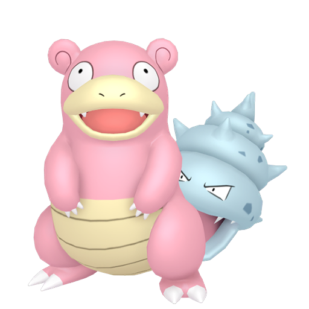
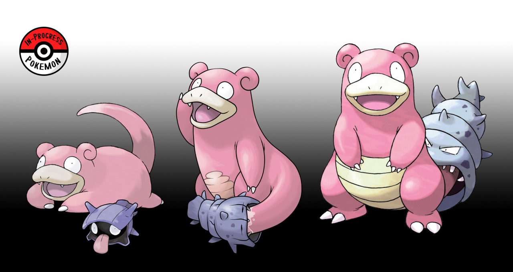
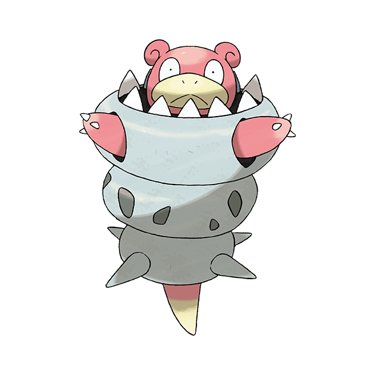
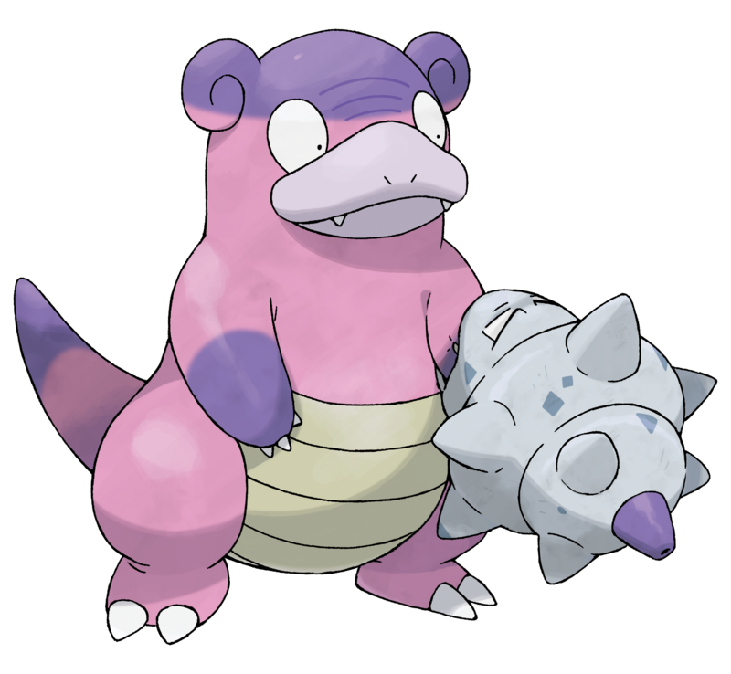
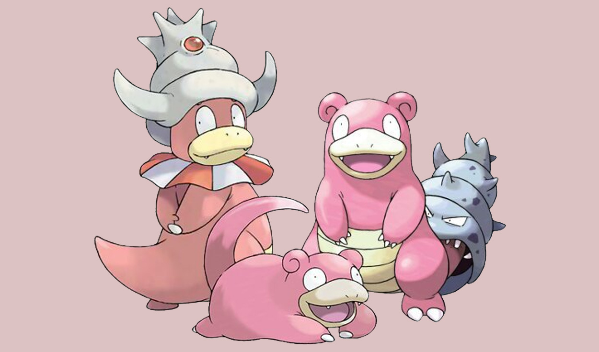

|
Índice Etimología Biología Mega-slowbro Slowbro de galar Evolución |
 |
Slowbro es un Pokémon de tipo agua/psíquico introducido en la primera generación. Es una de las dos evoluciones posibles de Slowpoke.
Etimología
Su nombre proviene de las palabras inglesas slow (lento) y brother (hermano).
Su nombre japonés, Yadoran, procede de 宿借り yadokari (cangrejo ermitaño).
Su nombre francés, Flagadoss, proviene de las palabras flagada (mareadito, debilito) y molosse (sabueso).
Biología
El Shellder de la cola de Slowbro se alimenta del dulce jugo que desprende y aprovecha la situación para poder trasladarse por tierra, y gracias al contrapeso que produce, Slowbro puede mantenerse erguido sobre sus patas traseras para moverse con mayor libertad y usar sus patas delanteras para aprender ataques como puño certero. Por alguna extraña razón, el Shellder que le mordió la cola también cambió de forma, transformándose en una especie de caracola.
Es pacífico, y prefiere evitar las disputas con otros Pokémon. Gusta de contemplar el océano para poder relajarse y desconectarse del mundo. Se dice que esta actividad, en conjunto con el veneno que secreta, le permite alcanzar el culmen de su relajación. El evolucionar en Slowbro le trae también algunos inconvenientes, pues ya no puede pescar con su cola, por lo que de mala gana tiene que sumergirse en el agua para poder pescar.
Este Pokémon habita cerca de cuerpos de agua como lagos, ríos y hasta el mismo mar. Aunque se dice que el Shellder que tiene en su cola no se desprenderá por nada del mundo debido a lo apetecible que es esta, se sabe que si se desprende, este Pokémon volverá a ser un Slowpoke. Es un Pokémon que vive en una distracción constante, tan es así que cada vez que Shellder aprieta con sus dientes su cola, se le ocurre una idea nueva, pero inmediatamente la olvida.

Mega-Slowbro
En Pokémon Rubí Omega, Zafiro Alfa y la séptima generación y solo durante los combates, Slowbro puede megaevolucionar a Mega-Slowbro (Mega Slowbro en inglés; メガヤドラン Mega Yadoran en japonés) con la Slowbronita equipada. En Pokémon: Let's Go, Pikachu! y Pokémon: Let's Go, Eevee!, basta con tener la Slowbronita para megaevolucionar, puesto que no se pueden equipar objetos. Sus tipos se mantienen y su habilidad cambia a caparazón. Su altura y sobre todo peso aumentan considerablemente. Al megaevolucionar, este Pokémon acumula energía en el Shellder que tiene enganchado a la cola creciendo hasta cubrir casi todo el cuerpo de Slowbro a excepción de la cabeza, las patas delanteras y la cola, manteniéndose en pie con la punta de esta última, y convirtiéndose en una armadura prácticamente impenetrable. Aunque Shellder ha crecido lo suficiente como para engullir a Slowpoke entero, este parece encontrarse sorprendentemente cómodo en su interior. También la dureza de su caparazón aumenta y se vuelve una coraza increíblemente dura consiguiendo que su defensa y ataque especial aumenten considerablemente.

Slowbro de Galar
En Galar, Slowbro presenta una forma regional. El Shellder que muerde su brazo causó una reacción química con las especias de galanuez que habitualmente ingiere Slowbro, adquiriendo así el tipo veneno. Cuando este Shellder le muerde el brazo más fuerte de lo normal, provoca a Slowbro un picor que le hace reaccionar moviendo el brazo hacia cualquier parte, provocando destrozos a su alrededor. De la punta de la caracola del Shellder de su brazo es capaz de disparar líquido venenoso para atacar a sus rivales.

Evolución
Slowpoke evoluciona a:
Slowbro en el nivel 37. Slowbro no evoluciona.
Slowking intercambiándolo con otro entrenador cuando va equipado con el objeto roca del rey, sólo en los juegos a partir de la segunda generación (no se puede cancelar la evolución). Slowking no evoluciona.
